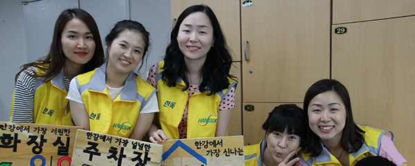
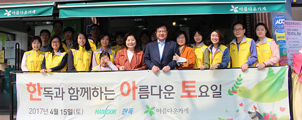
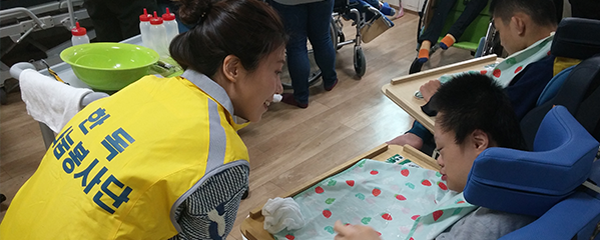

한독나눔봉사단
한독나눔봉사단은 한독 전 직원이 불우이웃, 노인, 장애우 등과 함께 이웃사랑을 실천하는 봉사활동입니다.
“한독나눔봉사단은 한독 전 직원이 참여하는 사랑나눔 봉사활동입니다”
한독나눔봉사단은 한독 전 직원이 불우이웃, 노인, 장애우 등과 함께 이웃사랑을 실천하는 봉사활동입니다. 한독의 모든 사회공헌활동은 직원들이 자발적으로 기부한 급여 나눔액에 회사가 동일 금액을 기부하는 '매칭그랜트(Matching grant)'방식으로 기금을 마련합니다.
직원들의 자발적인 참여와 공감 속에서 한독나눔봉사단의 사랑 나눔은 매일 자라나고 있습니다. 우리 이웃과 함께 따뜻한 세상을 만들어가는 한독나눔봉사단의 훈훈한 이야기를 들어보세요!
주요프로그램
-
1 
나의 작은 나눔이 모여 큰 사랑으로
“한독나눔펀드”한독나눔펀드에 참여한 직원의 급여에서 매월 신청 구좌 (1구좌=3,000원)만큼의 금액을 모아 곳곳의 어려운 이웃을 돕는데 쓰고 있습니다.
-
2 
쓰지 않는 물품도 가치 있게
“한독과 함께하는 아름다운 토요일”옷, 신발 등 직원들이 기증한 물품을 모아 아름다운 가게에서 일일 바자회를 개최하고 있습니다.
판매 수익금 전액은 불우 이웃을 위해 쓰입니다. -
3 
장애우와 함께 따뜻한 마음을 나누는
“한마음 봉사활동”한마음 봉사활동은 장애우 생활시설인 한사랑 마을을 방문해 장애우들과 함께 생일 파티, 산책하기,책 읽어주기, 식사 보조 등을 하는 봉사활동입니다.
장애우와 함께 따뜻한 마음을 나누며 더불어 사는 삶의 온기를 전하고 있습니다